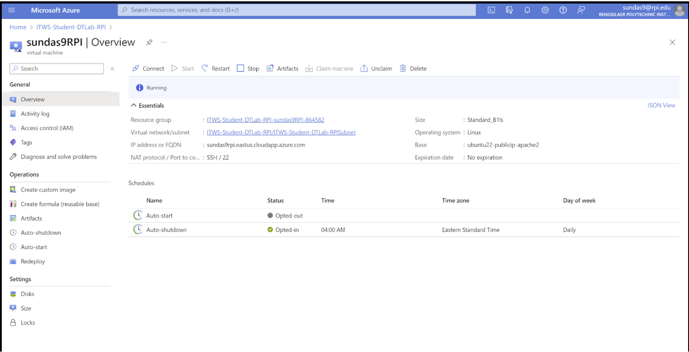
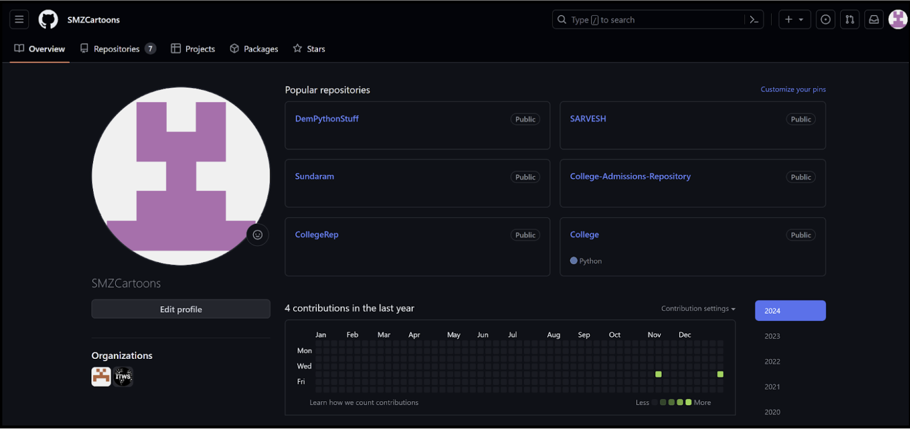
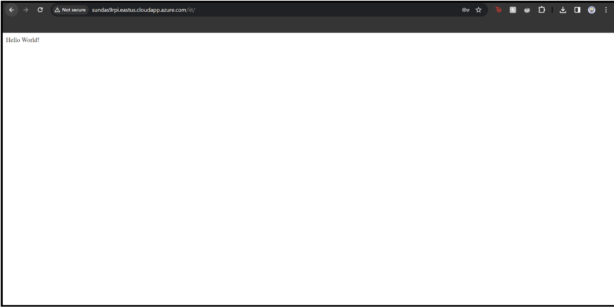

Projects
Home
Projects
Home
The first lab of Intro to ITWS introduced DevOps by allowing the students to set up their own Azure Instance and deploy their very first version of this website. Here are screenshots documenting this process.
Photo of Azure instance running for the first time
Photo of my Github Profile
Photo of deployed website